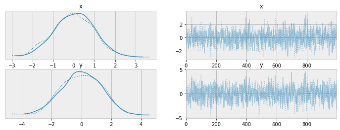
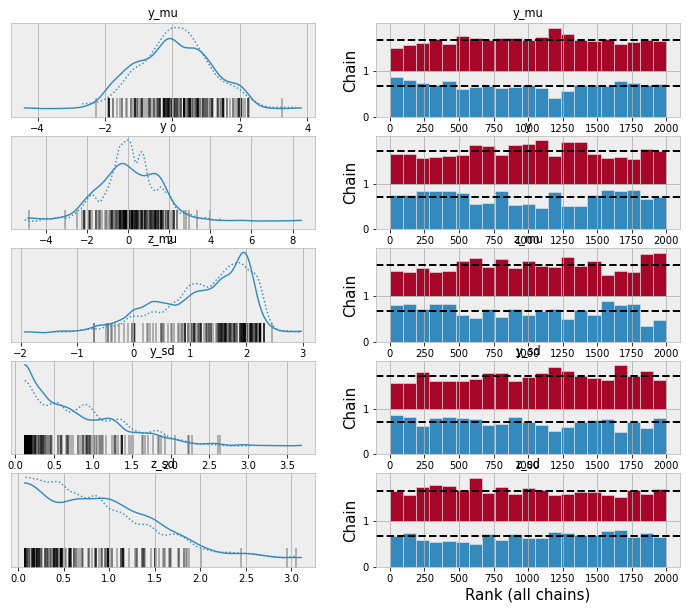
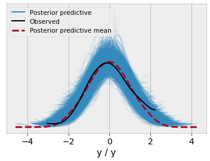
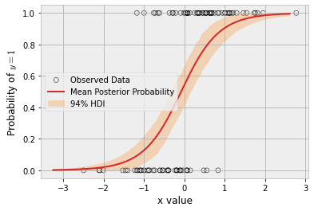
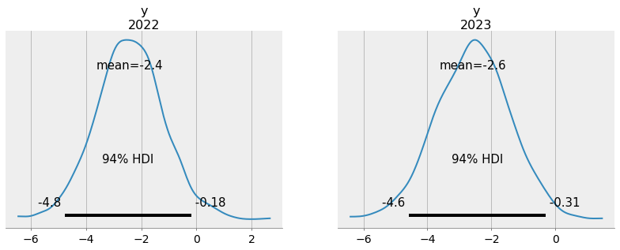

Alternative Frontends for PyMC
Rob Zinkov
2023-11-19
When people are starting to learn pymc they often assume the syntax and workflow for the library is something that’s unchangeable. But thanks to the modular way the library is implemented, I’m going to show that it’s fairly easy to use it in a totally different way!
Sample as a method on the model
Some people see sampling as more a method on the model than a function. We can always extend pm.Model for those that find that more intuitive
class Model(pm.Model):
def sample(self, *args, **kwargs):
return pm.sample(*args, model=self, **kwargs)
def sample_posterior_predictive(self, *args, **kwargs):
return pm.sample_posterior_predictive(
*args,
model=self,
**kwargs,
)Here is a simple example of it in action
with Model() as basic_model:
x = pm.Normal("x", 0., 1.)
y = pm.Normal("y", x, 1.)
idata = basic_model.sample(draws=1000)Models as parameterised functions
The idea here is to create models by just using a decorator.
def model(f):
@wraps(f)
def make_model(*args, **kwargs):
with Model() as m:
f(*args, **kwargs)
return m
return make_modelWith this change our previous model becomes:
In practice, this removes all need to think about context managers

But the real composition happens with how readily helper methods can be used
def hyperprior(name, **kwargs):
mu = pm.Normal(name + "_mu", mu=0, sigma=1)
sd = pm.HalfNormal(name + "_sd", sigma=1)
return pm.Normal(name, mu=mu, sigma=sd, **kwargs)
@model
def model_with_helper():
y = hyperprior("y")
z = hyperprior("z", observed=2.)
And since the model returned is an ordinary pymc model object, it can be readily used for things like posterior predictive checks
y_data = np.random.normal(size=100)
@model
def ppc_model():
x = pm.Normal("x")
y = pm.Normal("y", x, 1., observed=y_data)m = ppc_model()
idata = pm.sample(draws=1000, model=m)
idata = pm.sample_posterior_predictive(trace=idata, model=m)
Finally, one underappreciated aspect of this functional approach to defining model is avoids the need for pm.MutableData in simpler models. Porting an example from the documentation
n_obs = 100
true_beta = 2.5
true_alpha = 0.25
x = np.random.normal(size=n_obs)
true_p = 1 / (1 + np.exp(-(true_alpha + true_beta * x)))
y = np.random.binomial(n=1, p=true_p)@model
def logistic_model(x, y):
alpha = pm.Normal("alpha")
beta = pm.Normal("beta")
p = pm.Deterministic("p", pm.math.sigmoid(alpha + beta * x))
obs = pm.Bernoulli("obs", p=p, observed=y, shape=x.shape[0])lm = logistic_model(x, y)
idata = lm.sample()
idata = lm.sample_posterior_predictive(
idata, extend_inferencedata=True,
)We call the logistic_model function with different arguments changing to use x_grid instead of x
grid_size = 250
x_grid = np.linspace(x.min(), x.max(), grid_size)
lm_grid = logistic_model(x_grid, y)
post_idata = lm_grid.sample_posterior_predictive(
idata, var_names=["p", "obs"],
)fig, ax = plt.subplots()
hdi = az.hdi(post_idata.posterior_predictive.p).p
ax.scatter(
x,
y,
facecolor="none",
edgecolor="k",
label="Observed Data",
)
p_mean = post_idata.posterior_predictive.p.mean(dim=["chain", "draw"])
ax.plot(
x_grid,
p_mean,
color="tab:red",
label="Mean Posterior Probability",
)
ax.fill_between(
x_grid,
*hdi.values.T,
color="tab:orange",
alpha=0.25,
label="94% HDI",
)
ax.legend()
ax.set(ylabel="Probability of $y=1$", xlabel="x value")
plt.show()
This even works really well for coords. But it needs a helper method
def set_coords(coords, lengths=None, model=None):
model = pm.modelcontext(model)
model.add_coords(coords=coords, lengths=lengths)Now let’s generate some data and fit a linear model
a_true = 2
b_true = -0.4
x = np.linspace(0, 10, 31)
year = np.arange(2022-len(x), 2022)
y = a_true + b_true * x + np.random.normal(size=len(x))@model
def linreg_model(x, coords):
set_coords(coords)
a = pm.Normal("a", 0, 3)
b = pm.Normal("b", 0, 2)
sigma = pm.HalfNormal("sigma", 2)
pm.Normal("y", a + b * x, sigma, observed=y, dims="year")
m = linreg_model(x, {"year": year})
linreg_idata = pm.sample(model=m)We can then update the coords seamlessly
m2 = linreg_model(x[-1] + x[1:3], coords={"year": [2022, 2023]})
pm.sample_posterior_predictive(
linreg_idata,
model=m2,
predictions=True,
extend_inferencedata=True,
)
While I personally think these changes simplify the models and speed-up the interactive workflow, that’s not the main reason I share them. I share them because more of us should be doing little experiments like these. There are certainly more low-hanging fruits to be had for people who are willing to join in!